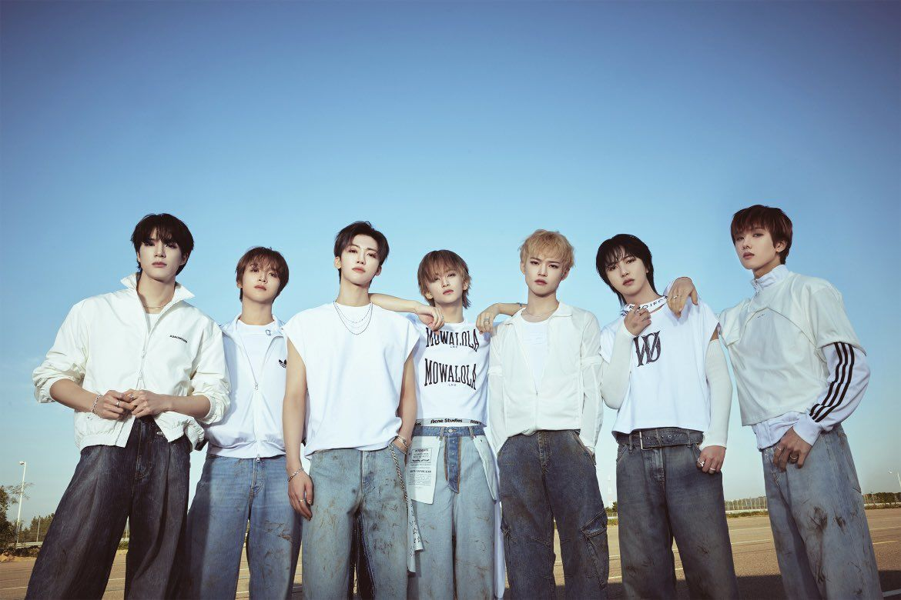

NCT DREAM
"Youthful Energy, Limitless Dreams"
NCT DREAM adalah unit ketiga dari NCT yang beranggotakan tujuh member berbakat. Mereka dikenal dengan konsep penuh energi, mimpi, dan musik yang menginspirasi anak muda di seluruh dunia.

About

NCT DREAM adalah sub-unit dari boygroup NCT di bawah SM Entertainment yang debut pada tahun 2016 dengan single Chewing Gum. Unit ini dibentuk dengan konsep remaja penuh energi dan mimpi, menjadikan mereka sebagai ikon pertumbuhan serta semangat anak muda di dunia K-pop.
Seiring berjalannya waktu, NCT DREAM berkembang menjadi grup dengan musik yang lebih matang tanpa kehilangan identitas awal mereka. Lagu-lagu mereka banyak mengangkat tema persahabatan, mimpi, dan perjalanan menuju kedewasaan, yang mencerminkan proses pertumbuhan para anggotanya dari remaja menjadi dewasa muda. Setiap perilisan selalu menunjukkan evolusi dalam warna musik dan konsep yang semakin berani, mulai dari nuansa cerah dan energik di masa awal hingga komposisi yang lebih emosional dan kompleks pada album-album berikutnya.
Dengan lagu-lagu populer seperti Hot Sauce, Hello Future, dan Beatbox, NCT DREAM berhasil mencetak berbagai pencapaian, termasuk penjualan album jutaan kopi serta penghargaan musik bergengsi. Mereka juga memiliki fanbase global bernama NCTzen (Dreamzens) yang setia mendukung setiap langkah perjalanan mereka di industri musik internasional.
Debut : 25 Agustus 2016
Label : SM Entertainment
Fans : Nctzen (Dreamzen)
Lagu Populer : Chewing Gum, Hot Sauce, Beatbox
Awards
Grand Prize (Daesang)
Seoul Music Awards 33rd (2023) untuk NCT Dream.
Grand Prize (Daesang)
Seoul Music Awards 33rd (2024) untuk NCT Dream.
Daesang “Singer of the Year”
Genie Music Awards 2022 untuk NCT Dream.
Daesang “Album of the Year”
Genie Music Awards 2022 untuk NCT Dream (album Glitch Mode).
Bonsang (Main Award)
Seoul Music Awards 33rd (2024) termasuk NCT Dream sebagai salah satu penerima.
Members
Diskografi
"Albums"
"Most Viewed MVs"